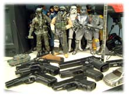
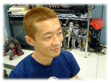

| 『 ファンタシースターオンライン 』 | キャラクターデザイン他担当 | 渡邉 渡 |
| 『 ファンタシースターオンライン 』 | キャラクターデザイン他担当 | 渡邉 渡 |
| ■プロフィール■ 就職活動していたら最初にセガから内定が来たのでそのまま入社。『AZEL』で酒井さんの手伝いを終えたらセガサターンが収束してしまった。プラットホームがドリームキャストに移行し、最初に参加したチームは研究段階初期でうやむやの内に解散。その後『やきゅつく』『(同)あそぼう』のイベントシーンを作り、ソニックチームには『PSO』初期に引越し。 |
|
| ■担当箇所で楽しまれた点や満足されている部分はどのようなところでしょうか？ |
 防具を身に着けた時の光エフェクト。 『PSO』は防具を着けても見た目は変わらないので、エフェクトだけで装備が変わったと感じられるように、また頻繁に着け替えてもまどろっこしくならないように気をつけました。 あとは【ヒューキャスト赤】のテクスチャ。 |
■ネットワークRPGの開発は初めてだったと思うのですが、心がけた事や発見した事はありますか？ 『PSO』には一応デフォルトのキャラ設定というものが存在しますが、ネットワークRPGである以上、全てのプレイヤーが作った全てのキャラクターが主役となります。 なのでキャラクリエーションで作られたキャラ全てが、平等な立場になるようにすることを心がけました。 |
| ■『PSO』開発中に印象に残っていることは？ |
|  会社に泊まって長い時間仕事をしていると、ちょっと気分転換したくなる時があって…。 ある夜中、会社の畳敷きの部屋に座布団でコースを作ってラジコンを走らせたり、ダンボールで的を作ってエアガンを撃ったりしたことが。 一瞬、ココは会社なのだということを見失いそうになるほどの気分転換効果。 |
| ■最近興味を持っていること、気になる存在などありましたら聞かせてください。
携帯電話の中身。 毎日使っているけどよく知らない。 陰陽師。 |
| ■今後、目指されることは？ |
 静かな老後。 |
| ■最後に、『PSO』やソニックチームファンの皆さんへ一言お願いします。 |
これからも『PSO』をよろしくお願いします。 |
 ▼キャラクターに関して
▼キャラクターに関して